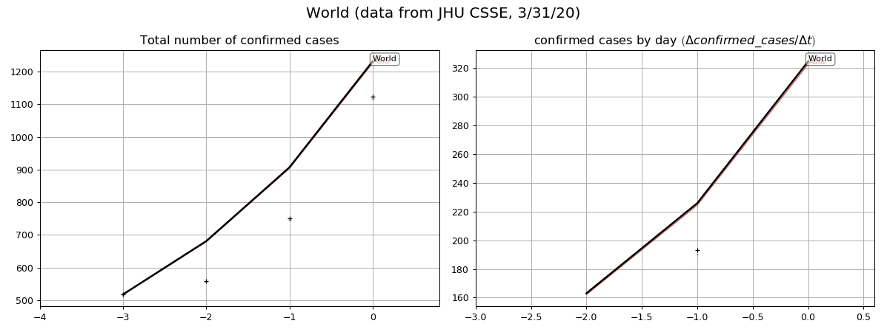

This page provides graphical representations of daily-updated data provided by JHU CSSE.
We consider the evolution of the number of deaths and confirmed cases. For several groups of countries/regions, we provide
Table of contents:


